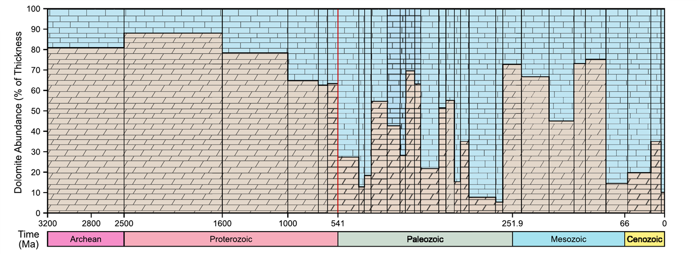
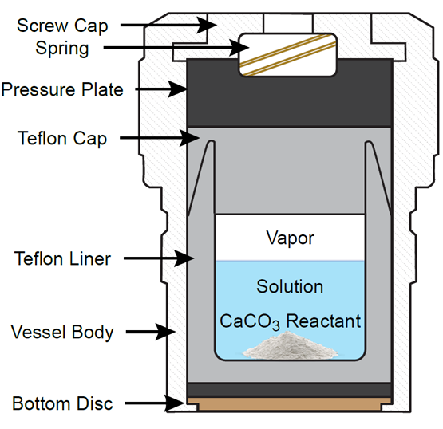
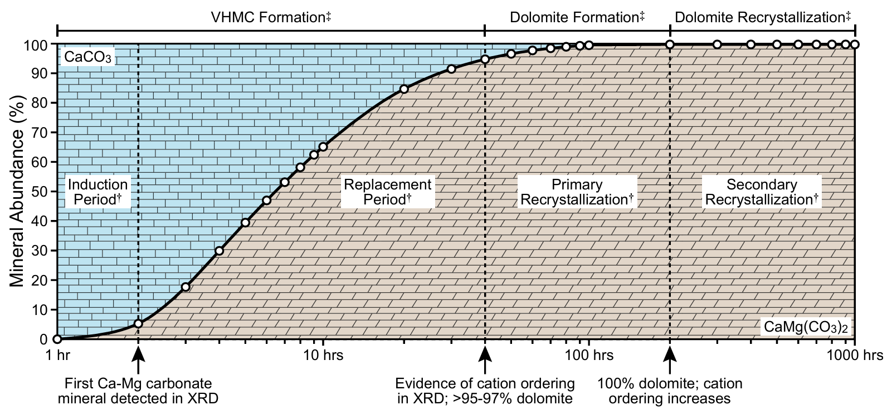
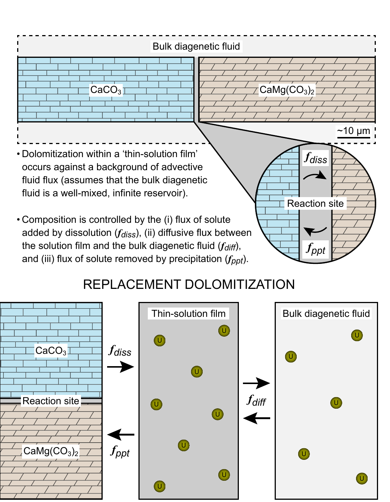

Experimental Proxy Calibration
Using high-temperature, replacement dolomitization experiments to test and correct the geochemical proxies that we use to reconstruct the paleoredox conditions of ancient seawater.
Overview
Dolomite comprises a significant proportion of ancient carbonate rocks, yet it rarely forms in modern sedimentary systems under near-surface, low-temperature conditions. This apparent contradiction, known as “the dolomite problem,” is a major obstacle for geochemistry — many proxies that are used to reconstruct the geochemical composition of ancient seawater are measured in rocks that have undergone some degree of diagenetic alteration, and it is often unclear whether the original seawater signal has survived.
To get an answer under carefully controlled conditions, we react CaCO3 with a Mg-rich fluid of known composition at elevated temperature and pressure, watching it convert to CaMg(CO3)2 over weeks to months. Given that the starting compositions are fixed, any trace element or isotope measured in the product can be directly attributed to how it partitioned during the reaction, rather than inferred from a geological sample with an unknown diagenetic history. The current focus of these experiments is uranium: δ238U in carbonate rocks is one of the best tools for reconstructing the oxygenation history of Earth's oceans, since the 238U/235U ratio shifts predictably with seafloor anoxia. Nevertheless, whether dolomitization preserves or resets that 238U/235U signal remains unconstrained.
Our results show that U(VI) is highly rock-buffered during dolomitization. In other words, uranium concentrations in ancient dolostones are largely controlled by how much uranium was available in the precursor limestone. That distinction matters beyond uranium — if one geochemical proxy is rock-buffered while others (e.g., strontium and iodine) are fluid-buffered, a single “diagenetic correction” cannot be applied across the geologic record. Each proxy must be calibrated on its own terms before it can be trusted to reconstruct the geochemical composition of ancient seawater.
Key Figures



